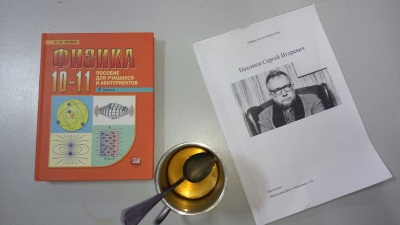

В СУНЦе действует система спецкурсов, согласно которой ученик должен посещать и сдавать зачёт хотя бы одного спецкурса, конечно, профиля школы. И формально это носит обязательный характер, но фактически за этим никто не следит. Лишь однажды нас зачем-то заставили заполнить Google-формы, но ничего не изменилось. В спецкурсах чётко прослеживаются два направления …
read more